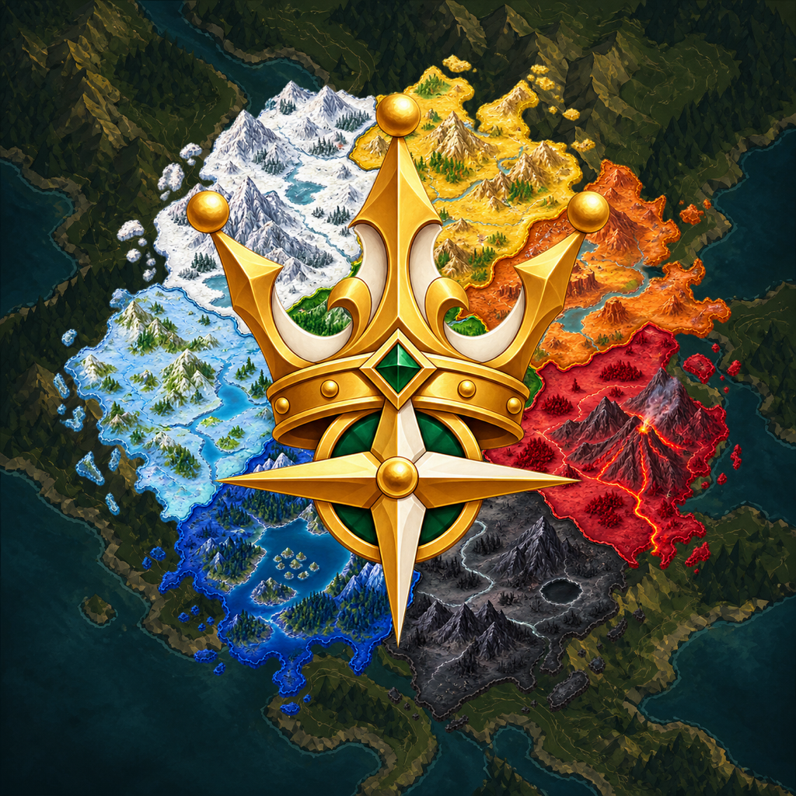
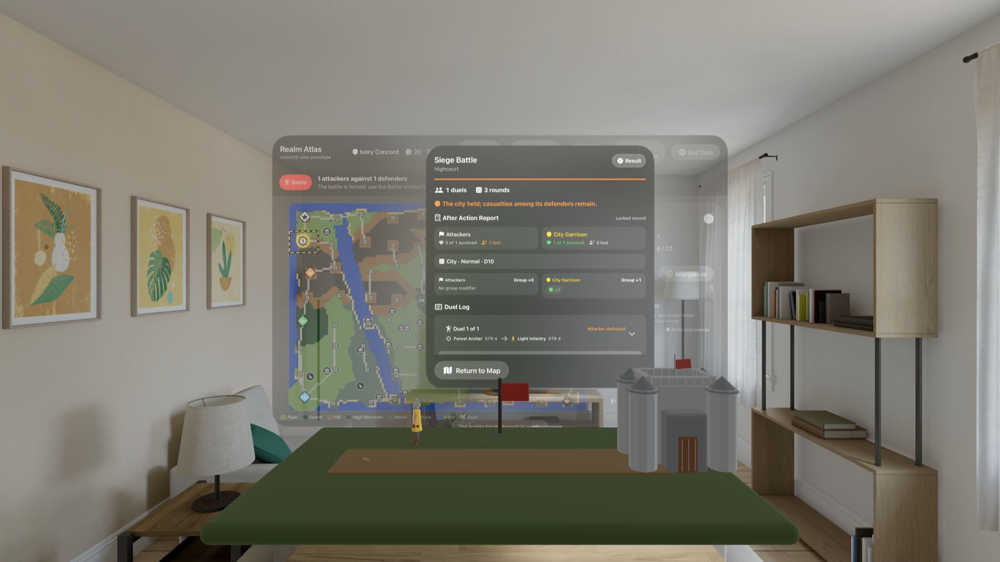
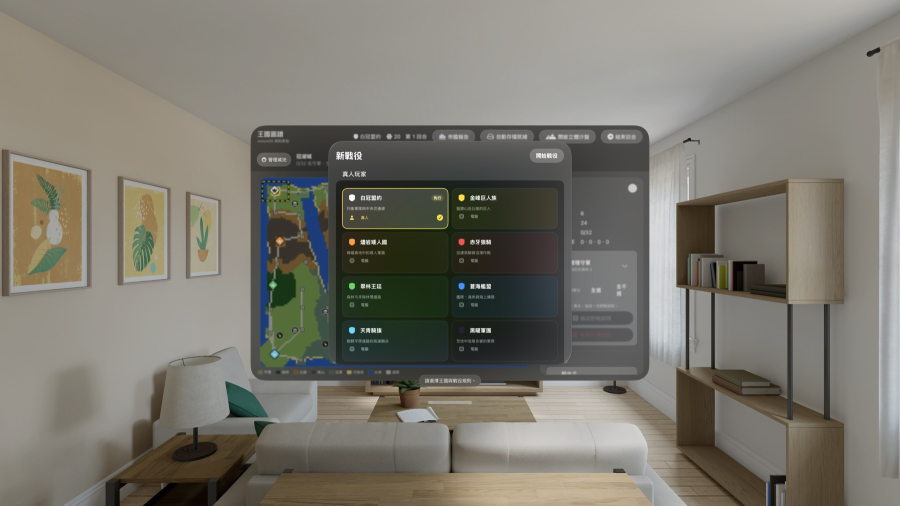
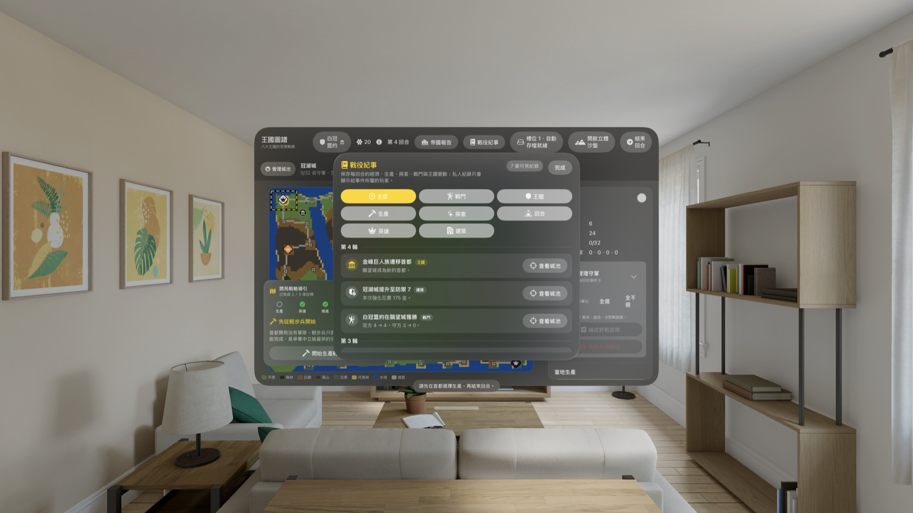
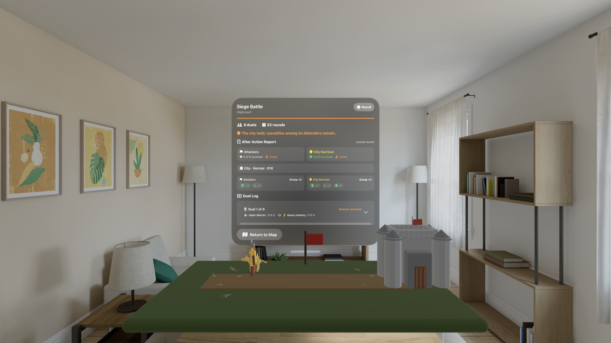
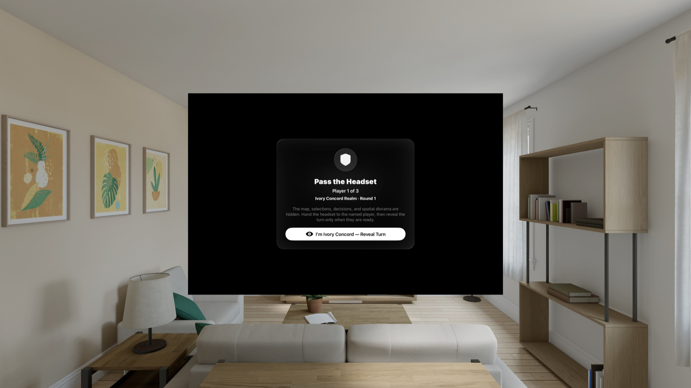

Apple Vision Pro · visionOS 1.0 已上架把八國爭霸擺上眼前的沙盤，讓每一步命令都看得見。
RealmAtlas 是一款原創回合制奇幻策略遊戲。你會在八十座城市的世界裡生產軍隊、指揮英雄、探索遺跡、經營王國，並在 Apple Vision Pro 的立體沙盤上看見戰局推進。

從第一座城開始，安排一場能長期推進的戰役
新戰役可以設定零到八個真人王國、先手勢力、地圖 seed，以及一般 D10 或激烈 D12 戰鬥。沒有人類玩家時，可以觀看八個 AI 王國自行競逐；Knight、Baron、Lord 與 Warlord 四種 AI 會以不同的擴張、集結、探索與外交判斷推進回合。

管理生產、英雄、路線與國力，而不是只看一張地圖
城市有自己的兵種、生產時間、價格與品質；軍隊要考慮地形移動、補給成本、海運容量與戰鬥順序。英雄能招募特殊盟友、探索四十二處遺跡與神殿、取得神器或祝福。帝國報告、戰役紀事、勝勢評估與軍議戰地手冊會把重要規則和事件留在同一個空間介面裡。

先看懂交戰條件，再觀看同一份結果如何發生
出兵前會先顯示雙方順序、地形與群體修正；確認後，遊戲鎖定逐次決鬥與每輪擲骰紀錄。戰鬥沙盤只負責呈現這份既定紀錄，暫停、逐拍、重播或跳到結果都不會重新擲骰。戰後報告則整理存活、損失、修正來源與完整決鬥明細。

自己推演、同機傳遞，或透過 SharePlay 共享戰役

隱私與執行邊界
RealmAtlas 不含廣告或第三方分析 SDK，也不為開發者蒐集位置、照片、聯絡人或遊戲紀錄。戰役、復原存檔與偏好儲存在裝置上；模型、地圖、語音、音效、AI 決策與戰鬥結果均由 App 內建資產和程式在裝置端執行。使用者主動啟用 SharePlay 時，大廳選擇、工作階段識別碼與戰役狀態會透過 Apple Group Activities 在參與者之間交換，不會送往開發者營運的伺服器。
RealmAtlas visionOS 1.0 已在 Apple Vision Pro 的 App Store 正式上架。美國商店售價為 US$8.99、分級 12+；App 提供 11 種書面語言，以及 10 種語言的預先產生語音提示。
Place the struggle of eight realms on a tabletop—and see every order unfold.
RealmAtlas is an original turn-based fantasy strategy game. Produce armies, command heroes, explore ruins, and govern a realm across eighty cities, with the campaign taking shape as a spatial diorama on Apple Vision Pro.
Start with one capital and shape a campaign built to last
A new campaign can assign zero to eight human realms, the first acting faction, a map seed, and Normal D10 or Intense D12 combat. With no human realm, the eight AIs can play an exhibition by themselves. Knight, Baron, Lord, and Warlord profiles make different choices about expansion, consolidation, exploration, and diplomacy.
Manage production, heroes, routes, and statecraft—not just pieces on a map
Cities have local units, build times, prices, and quality profiles. Armies account for terrain, upkeep, naval capacity, and fight order. Heroes recruit unusual allies, explore forty-two ruins and temples, and discover artifacts or blessings. Empire reports, a campaign chronicle, victory outlook, and War Council Field Guide keep rules and history inside the same spatial interface.
Understand the conditions first, then watch one immutable result unfold
Before an attack, RealmAtlas shows both fight orders, terrain, and group modifiers. Confirmation locks the sequential duels and every die roll. The battle diorama presents that record without changing it: pause, advance one beat, replay, or skip to the result without rerolling. The after-action report preserves survivors, losses, modifier sources, and duel details.
Play alone, pass one headset, or share a campaign through SharePlay
Privacy and runtime boundaries
RealmAtlas contains no advertising or third-party analytics SDK and does not collect location, photos, contacts, or gameplay records for the developer. Campaigns, recovery saves, and preferences remain on device. Models, maps, voices, sound effects, AI decisions, and combat outcomes run from bundled assets and code. When the user chooses SharePlay, lobby choices, participant session identifiers, and campaign state are exchanged among participants through Apple Group Activities—not sent to a developer-operated server.
RealmAtlas visionOS 1.0 is now available on the App Store for Apple Vision Pro. It is US$8.99 in the United States with a 12+ age rating, localized text in 11 written languages, and pre-generated spoken cues in 10 spoken languages.